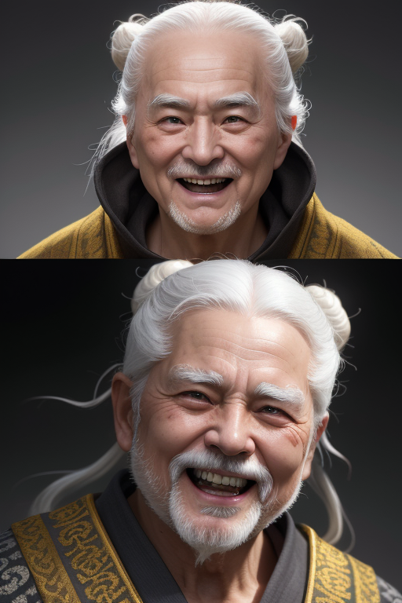

周伯通
金庸笔下最可爱的武学天才。一个永远长不大的老小孩，却创造了双手互搏和空明拳两门绝世武功。他用一生证明：真正的智慧，在于保持赤子之心。
人物小传
| 姓名 | 周伯通 |
| 别名 | 老顽童、中顽童 |
| 身份 | 全真教王重阳的师弟 |
| 武功 | 空明拳、双手互搏、九阴真经 |
| 特殊 | 与瑛姑有一段情、一灯大师的"情敌" |
| 性格标签 | 天真烂漫、贪玩、武痴、赤子之心 |
| 爱好 | 养蜜蜂、玩耍、和人打架 |
周伯通是金庸笔下最可爱的角色——一个武功绝顶却永远长不大的"老小孩"。他用一生证明了：真正的智慧，是保持一颗赤子之心。
性格分析
武侠世界中的彼得潘
周伯通是金庸创造的独一无二的角色类型——一个永远不会老的孩子。他的心智停留在七八岁儿童的水平：贪玩、好奇、无忧无虑。但偏偏就是这样一个"小孩"，拥有着整个金庸世界中最顶级的武学天赋。
他的核心特质是"忘"——他忘记了瑛姑（或者说假装忘记），忘记了《九阴真经》是禁术，甚至忘记了自己是个老人。正是这种"忘"，让他能够心无杂念地创造出双手互搏这样的天才武功。
聪明人学不会双手互搏，是因为他们"想太多"。小龙女能学会是因为她心如止水。郭靖能学会是因为他心无杂念。而周伯通能创造出来——是因为他内心从未长大。

命运轨迹
奇遇与转折
被囚桃花岛：最好的"囚徒"
周伯通被黄药师困在桃花岛十五年的经历，表面上是囚禁，实际上是他武学创造力最旺盛的时期。没有外界的干扰、没有江湖的纷争，他反而得以潜心研究武学——空明拳和双手互搏都诞生于这段时期。
这给我们的启示是：有时候"被迫"的独处，反而是最大的机遇。如果没有这十五年的囚禁，周伯通可能只是一个武功不错的全真教道士，而不会成为武学大宗师。
武功绝学
双手互搏
['周伯通最天才的创造。左手画圆、右手画方，一人同时使用两种不同的武功。这门武功的"门槛"很有意思——越聪明的人越学不会，因为聪明人无法"不想"；只有心思纯净的人才能掌握。']
空明拳
['从老子《道德经》中"空"和"明"的概念悟出的拳法。以空制有、以柔克刚。这套拳法体现了周伯通不同于师兄王重阳的武学理解——王重阳追求"大道至简"，周伯通追求的则是"大道至乐"。']
情感世界
与瑛姑：一生逃避的爱
周伯通一生最大的弱点就是瑛姑。他不是不爱，而是不敢爱——因为他潜意识里知道自己是个"永远长不大的孩子"，无法承担爱情带来的责任。他选择了逃跑，一逃就是几十年。
有趣的是，最终他"回归"的方式也像个孩子——在百花谷里和瑛姑、一灯大师一起养蜜蜂。没有轰轰烈烈的表白，没有海誓山盟，就是简简单单地在一起。这也许是周伯通能给出的最好的爱了——陪伴。
与郭靖：忘年之交
周伯通和郭靖的友情是《射雕》中最温暖的部分。两个人都"不聪明"——一个是真笨，一个是装笨——但两个人都有一颗纯净的心。周伯通教郭靖武功就像一个大孩子在教小弟弟玩游戏，充满了童趣。
趣事典故
名场面：骑鲨鱼
周伯通曾经在海里骑过鲨鱼——这是他引以为傲的"光辉事迹"之一。当他得意洋洋地讲给郭靖听时，郭靖信以为真，黄蓉笑得前仰后合。这个细节完美展现了周伯通的性格：他不是在吹牛，他是真的相信自己骑过鲨鱼——因为在他的世界里，一切都是可能的。
冷知识：周伯通的年龄
根据原著推算，周伯通在《神雕侠侣》中已经近百岁了。但他看起来最多六七十岁，而且心智永远停留在七八岁。金庸似乎在暗示：保持童心是长寿的秘诀。
现实启示
保持好奇心和童心
周伯通最大的启示是：不要让自己变老——不是生理上，而是心理上。随着年龄增长，我们变得越来越"正经"、越来越"成熟"，但同时也失去了创造力和快乐。周伯通证明了：保持好奇心才是创造力的源泉。
游戏心态面对竞争
周伯通参加华山论剑从来不是为了"争第一"，而是为了"好玩"。这种游戏心态让他在面对压力时反而能发挥出最大的创造力。在商业竞争中，有时候太"认真"反而会束手束脚——适当的游戏心态可以让你看到别人看不到的机会。
1. 保持童心——创造力来自好奇心，好奇心来自童心。
2. 不要把一切看得太严重——用游戏心态面对竞争，结果往往更好。